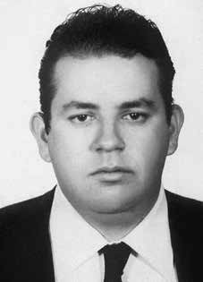

Paulo
de Tarso
Celestino
da Silva
CIRCUNSTÂNCIAS DA MORTE
Paulo de Tarso Celestino da Silva desapareceu em 12 de julho de 1971. Foi capturado, juntamente com Heleny Ferreria Telles Guariba, no Rio de Janeiro por agentes do DOI-CODI do I Exército. Pedro Celestino da Silva, pai de Paulo de Tarso, também advogado e deputado federal pelo Estado de Goiás, cassado pelo AI-5, envidou esforços durante anos para obter alguma informação sobre o filho. Por meio da seção Brasília da OAB, acionou o Ministério do Exército.
Em dezembro de 1971, o Ministério informou que Paulo de Tarso havia sido preso por agentes militares, sendo, depois, entregue à Polícia Federal, de modo que ao Ministério da Justiça caberiam eventuais esclarecimentos. Essa informação foi desmentida posteriormente. Diante da manifestação oficial do Ministro da Justiça Armando Falcão, em 20 de fevereiro de 1975, sobre 27 desaparecidos políticos, qualificados no comunicado como foragidos, Pedro Celestino, no dia seguinte, fez publicar uma carta aberta no Jornal do Brasil e em outros periódicos do país.
Meses antes, já havia entrado em contato com o general Golbery do Couto e Silva, por meio de uma carta pungente. Como cidadão e chefe de família é que dirijo-me a Vossa Excelência rogando fazer chegar ao Presidente da República o meu apelo extremo, depois de ver frustrados todos os recursos judiciais e extrajudiciais permitidos pela ordem jurídica vigente no país […] para encontrar meu filho. Não venho pedir-lhe que o solte. Mas o mínimo que se deve garantir à pessoa humana, isto é, seja processado oficialmente, com o direito de sua família dar-lhe assistência jurídica e principalmente humana.
Diante da negativa de informações das autoridades, o tempo foi se encarregando de fazer algumas revelações, que se deram, sobretudo, por meio do testemunho de ex-vítimas e ex-militares. Na matéria “Longe do ponto final”, publicada pela revista IstoÉ na edição de 8 de abril de 1987, o ex-médico Amílcar Lobo declarou ter atendido Paulo de Tarso durante o tempo em que serviu no DOI-CODI/RJ.
O testemunho mais importante, porém, para o esclarecimento das circunstâncias de desaparecimento de Heleny foi dado pela ex-presa política Inês Etienne Romeu. No relatório que produziu, em 18 de setembro de 1971, sobre sua prisão no centro clandestino mantido pelo Centro de Inteligência do Exército em Petrópolis, a chamada “Casa da Morte”, Inês aponta uma série de mortes e desaparecimentos que presenciou durante os mais de noventa dias que permaneceu incomunicável naquele “aparelho”.
Dentre esses casos, relata um, ocorrido em julho de 1971, envolvendo Walter Ribeiro Novaes, Paulo de Tarso e uma moça, que acredita ser Heleny. Em relação ao primeiro, um dos carcereiros do local, de nome “Márcio”, disse-lhe que havia sido executado. O segundo, Paulo de Tarso, foi torturado por quarenta e oito horas pelos carcereiros “Dr. Roberto”, “Laecato”, “Dr. Guilherme”, “Dr. Teixeira”, “Zé Gomes” e “Camarão”. Foi colocado no pau-de-arara e obrigado a comer uma grande quantidade de sal, tendo suplicado água durante horas.
Finalmente, em relação à mulher, Inês Etienne relata que “foi barbaramente torturada durante três dias, inclusive com choques elétricos na vagina”. Em termos de fontes escritas, um documento encontrado nos acervos do SNI custodiado pelo Arquivo Nacional também lança luzes sobre o desaparecimento de Paulo de Tarso. Em setembro de 1975, em comunicação feita com a Agência Central, a Agência São Paulo do SNI remeteu à matriz a quinta e última “relação de elementos que possuem registros como pertencentes ao PCB”.
À frente do nome de Paulo de Tarso, consta a seguinte informação: “24 Jul 71 – GB”. O mesmo padrão de informação consta na frente de quase todos os nomes que preenchem as quatro folhas da lista. Analisando-se um a um, percebe-se que vários deles referem-se a mortos e desaparecidos do regime militar. Complementarmente, nota-se que a data e o local indicados na frente dos nomes coincidem exata ou praticamente com a data e o local de desaparecimento ou morte dos arrolados.
Sendo assim, conclui-se que os dados que aparecem na sequência do nome de Paulo de Tarso podem indicar o registro da data e do local de sua morte. Em longa reportagem dada à revista Veja, o sargento Marival Chaves Dias do Canto, ex-agente do DOI-CODI/SP, relatou ter ouvido de agentes que estiveram na Casa da Morte que os corpos dos presos políticos executados naquele centro clandestino eram esquartejados, para dificultar a eventual identificação dos restos mortais.
“Cada membro decepado era colocado num saco e enterrado em local diferente”. Por sua vez, o exmédico Amílcar Lobo declarou, no livro A Hora do Lobo, a Hora do Carneiro, que os mortos na Casa de Petrópolis costumavam ser enterrados nos terrenos adjacentes à própria residência.
Com base em relatos como esses e em outras apurações, a CEMDP, o Grupo Tortura Nunca Mais do Rio de Janeiro e o Ministério Público determinaram investigações nos livros de registro dos cemitérios de Petrópolis.
O objetivo dessa investigação, realizada entre os anos de 2010 e 2011, era apurar a informação de que desaparecidos políticos haviam sido sepultados em Petrópolis. O estudo preliminar indicou a possível localização de 19 desaparecidos, podendo Paulo de Tarso ser um deles. Até a presente data Paulo de Tarso permanece desaparecido.
Paulo de Tarso Celestino da Silva disappeared on July 12, 1971. He was captured, together with Heleny Ferreria Telles Guariba, in Rio de Janeiro by DOI-CODI agents of the 1st Army. Pedro Celestino da Silva, father of Paulo de Tarso, also a lawyer and federal deputy for the State of Goiás, impeached by AI-5, made efforts for years to obtain some information about his son. Through the Brasília section of the OAB, he contacted the Ministry of the Army.
In December 1971, the Ministry reported that Paulo de Tarso had been arrested by military agents, and was later handed over to the Federal Police, so that the Ministry of Justice would be responsible for any clarifications. This information was later refuted. In view of the official statement by the Minister of Justice Armando Falcão, on February 20, 1975, about 27 missing politicians, classified in the statement as fugitives, Pedro Celestino, the following day, published an open letter in Jornal do Brasil and in other periodicals in the country.
Months before, he had already contacted General Golbery do Couto e Silva, through a poignant letter. As a citizen and head of the family, I address Your Excellency asking for my extreme appeal to be sent to the President of the Republic, after seeing all the judicial and extrajudicial resources allowed by the legal order in force in the country frustrated [...] to find my son. I'm not here to ask you to release him. But the minimum that must be guaranteed to the human person, that is, be officially prosecuted, with the right of his family to provide him with legal and especially human assistance.
Given the denial of information from the authorities, time took the lead in making some revelations, which were made, above all, through the testimony of former victims and former soldiers. In the article “Far from the final point”, published by IstoÉ magazine in the April 8, 1987 edition, former doctor Amílcar Lobo declared that he had treated Paulo de Tarso during the time he served at DOI-CODI/RJ.
The most important testimony, however, to clarify the circumstances of Heleny's disappearance was given by former political prisoner Inês Etienne Romeu. In the report she produced, on September 18, 1971, about her imprisonment in the clandestine center maintained by the Army Intelligence Center in Petrópolis, the so-called “House of Death”, Inês points out a series of deaths and disappearances that she witnessed during the more than ninety days that she remained incommunicado in that “apparatus”.
Among these cases, he reports one, which occurred in July 1971, involving Walter Ribeiro Novaes, Paulo de Tarso and a girl, who he believes to be Heleny. Regarding the first, one of the local jailers, named “Márcio”, told him that he had been executed. The second, Paulo de Tarso, was tortured for forty-eight hours by the prison guards “Dr. Roberto”, “Laecato”, “Dr. Guilherme”, “Dr. Teixeira”, “Zé Gomes” and “Camarão”. He was placed on a stick and forced to eat a large amount of salt, having begged for water for hours.
Finally, in relation to the woman, Inês Etienne reports that “she was savagely tortured for three days, including electric shocks to her vagina”. In terms of written sources, a document found in the SNI collections held by the National Archives also sheds light on the disappearance of Paulo de Tarso. In September 1975, in a communication made with the Central Agency, the SNI São Paulo Agency sent the fifth and final “list of elements that are registered as belonging to the PCB” to the headquarters.
In front of the name of Paulo de Tarso, the following information appears: “24 Jul 71 – GB”. The same pattern of information appears in front of almost all the names that fill the four sheets of the list. Analyzing one by one, it is clear that several of them refer to those killed and missing during the military regime. Additionally, it should be noted that the date and place indicated in front of the names coincide exactly or practically with the date and place of disappearance or death of those listed.
Therefore, it is concluded that the data that appears following the name of Paulo de Tarso may indicate the record of the date and place of his death. In a long report given to Veja magazine, Sergeant Marival Chaves Dias do Canto, a former DOI-CODI/SP agent, reported having heard from agents who were at the Death House that the bodies of political prisoners executed in that clandestine center were dismembered, to make it difficult to identify the remains.
“Each severed limb was placed in a bag and buried in a different location.” In turn, former doctor Amílcar Lobo declared, in the book A Hora do Lobo, a Hora do Carneiro, that the dead at Casa de Petrópolis used to be buried in the land adjacent to the residence itself.
Based on reports like these and other investigations, CEMDP, the Rio de Janeiro Tortura Nunca Mais Group and the Public Ministry ordered investigations into the registration books of Petrópolis cemeteries.
The objective of this investigation, carried out between 2010 and 2011, was to investigate information that missing politicians had been buried in Petrópolis. The preliminary study indicated the possible location of 19 missing people, with Paulo de Tarso being one of them. To date, Paulo de Tarso remains missing.
Paulo de Tarso Celestino da Silva desapareció el 12 de julio de 1971. Fue capturado, junto con Heleny Ferreria Telles Guariba, en Río de Janeiro por agentes del DOI-CODI del 1.er Ejército. Pedro Celestino da Silva, padre de Paulo de Tarso, también abogado y diputado federal por el estado de Goiás, acusado por AI-5, hizo esfuerzos durante años para obtener alguna información sobre su hijo. A través de la sección Brasilia de la OAB contactó al Ministerio del Ejército.
En diciembre de 1971, el Ministerio informó que Paulo de Tarso había sido detenido por agentes militares, y luego entregado a la Policía Federal, para que el Ministerio de Justicia se encargara de cualquier esclarecimiento. Esta información fue posteriormente refutada. Ante la declaración oficial del Ministro de Justicia Armando Falcão, del 20 de febrero de 1975, sobre 27 políticos desaparecidos, clasificados en la declaración como prófugos, Pedro Celestino, al día siguiente, publicó una carta abierta en el Jornal do Brasil y en otros periódicos del país.
Meses antes, ya se había puesto en contacto con el general Golbery do Couto e Silva, a través de una conmovedora carta. Como ciudadano y cabeza de familia, me dirijo a Su Excelencia solicitando que mi recurso extremo sea remitido al Presidente de la República, luego de ver frustrados todos los recursos judiciales y extrajudiciales que permite el ordenamiento jurídico vigente en el país [...] para encontrar a mi hijo. No estoy aquí para pedirte que lo liberes. Pero lo mínimo que se debe garantizar a la persona humana, es decir, ser procesado oficialmente, con el derecho de su familia a brindarle asistencia jurídica y sobre todo humana.
Ante la negación de información por parte de las autoridades, el tiempo se adelantó al hacer algunas revelaciones, que se hicieron, sobre todo, a través del testimonio de ex víctimas y ex militares. En el artículo “Lejos del punto final”, publicado por la revista IstoÉ en la edición del 8 de abril de 1987, el ex médico Amílcar Lobo declaró haber atendido a Paulo de Tarso durante el tiempo que sirvió en el DOI-CODI/RJ.
Sin embargo, el testimonio más importante para esclarecer las circunstancias de la desaparición de Heleny fue el de la ex presa política Inês Etienne Romeu. En el informe que presentó, el 18 de septiembre de 1971, sobre su encarcelamiento en el centro clandestino mantenido por el Centro de Inteligencia del Ejército en Petrópolis, la llamada “Casa de la Muerte”, Inês señala una serie de muertes y desapariciones de las que fue testigo durante los más de noventa días que permaneció incomunicada en ese “aparato”.
Entre estos casos, relata uno, ocurrido en julio de 1971, que involucra a Walter Ribeiro Novaes, Paulo de Tarso y una niña, que cree que es Heleny. Respecto al primero, uno de los carceleros locales, llamado “Márcio”, le dijo que había sido ejecutado. El segundo, Paulo de Tarso, fue torturado durante cuarenta y ocho horas por los guardias de prisión "Dr. Roberto", "Laecato", "Dr. Guilherme", "Dr. Teixeira", "Zé Gomes" y "Camarão". Lo pusieron sobre un palo y lo obligaron a comer una gran cantidad de sal, después de haber suplicado agua durante horas.
Finalmente, en relación a la mujer, Inês Etienne relata que “fue salvajemente torturada durante tres días, incluidas descargas eléctricas en la vagina”. En cuanto a las fuentes escritas, un documento encontrado en las colecciones del SNI en el Archivo Nacional también arroja luz sobre la desaparición de Paulo de Tarso. En septiembre de 1975, en comunicación realizada con la Agencia Central, la Agencia SNI São Paulo envió a la sede la quinta y última “lista de elementos que están registrados como pertenecientes al PCB”.
Delante del nombre de Paulo de Tarso aparece la siguiente información: “24 Jul 71 – GB”. El mismo patrón de información aparece delante de casi todos los nombres que llenan las cuatro hojas de la lista. Analizando uno por uno, queda claro que varios de ellos se refieren a personas asesinadas y desaparecidas durante el régimen militar. Además, cabe señalar que la fecha y lugar indicados delante de los nombres coinciden exacta o prácticamente con la fecha y lugar de desaparición o muerte de los enumerados.
Por lo tanto, se concluye que los datos que aparecen a continuación del nombre de Paulo de Tarso pueden indicar el registro de la fecha y lugar de su muerte. En un extenso reportaje entregado a la revista Veja, el sargento Marival Chaves Dias do Canto, ex agente del DOI-CODI/SP, relató haber escuchado por agentes que estaban en la Casa de la Muerte que los cuerpos de los presos políticos ejecutados en ese centro clandestino fueron desmembrados, para dificultar la identificación de los restos.
"Cada miembro amputado fue colocado en una bolsa y enterrado en un lugar diferente". Por su parte, el ex médico Amílcar Lobo declaró, en el libro A Hora do Lobo, a Hora do Carneiro, que los muertos de la Casa de Petrópolis solían ser enterrados en los terrenos adyacentes a la propia residencia.
Con base en informes como estos y otras investigaciones, el CEMDP, el Grupo Tortura Nunca Mais de Río de Janeiro y el Ministerio Público ordenaron investigaciones sobre los libros de registro de los cementerios de Petrópolis.
El objetivo de esta investigación, realizada entre 2010 y 2011, fue investigar informaciones de que políticos desaparecidos habían sido enterrados en Petrópolis. El estudio preliminar indicó la posible localización de 19 personas desaparecidas, siendo Paulo de Tarso uno de ellos. Hasta la fecha Paulo de Tarso sigue desaparecido.